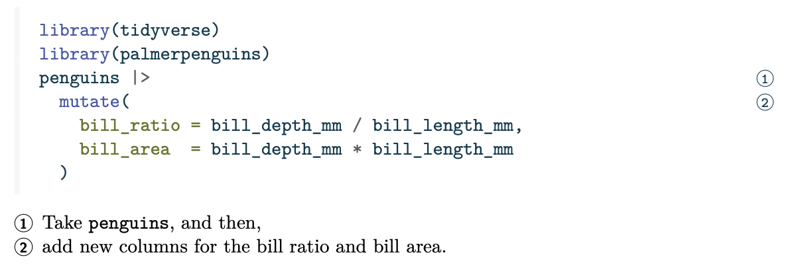

Code Annotation
This feature is new in Quarto 1.3, which you can download at https://quarto.org/docs/download/
Overview
Code blocks and executable code cells in Quarto can include line-based annotations. Line-based annotations provide a way to attach explanation to lines of code much like footnotes.
For example, this code uses annotation to describe the steps in an R dplyr pipeline in plain language:
library(tidyverse)
library(palmerpenguins)
penguins |> # <1>
mutate( # <2>
bill_ratio = bill_depth_mm / bill_length_mm, # <2>
bill_area = bill_depth_mm * bill_length_mm # <2>
) # <2>- Take
penguins, and then, - add new columns for the bill ratio and bill area.
The default HTML annotation style displays annotations in a list below the code block. Clicking on the annotation number in the list highlights the relevant lines in the code. Other HTML styles hide the annotations, revealing them in a tooltip when a user hovers or selects a marker, as illustrated in this example of a Revealjs presentation:
format: revealjsThe PDF format also allows for annotations, numbering, and displaying the annotation text below the code. In other formats, like Word and GitHub Markdown, annotations are instead labeled with the line of code (or lines of code) to which the annotation text applies.

``` r
library(tidyverse)
library(palmerpenguins)
penguins |>
mutate(
bill_ratio = bill_depth_mm / bill_length_mm,
bill_area = bill_depth_mm * bill_length_mm
)
```
Line 3
Take `penguins`, and then,
Lines 4-7
add new columns for the bill ratio and bill area.To add code annotation to a code block, you need to add two things: specially formatted code comments in your code cell, and an ordered list below the code cell with the annotation text. Read more in Annotation Syntax.
The code-annotations option controls how annotations appear in the HTML format (below (default), hover or select), and in all formats, whether annotation is disabled (false), or if annotations should be removed from the output (none).
Annotation Syntax
Annotations for a code cell consist of two related elements:
Each annotated line should be terminated with a comment (using the code cell’s language comment character) followed by a space and then an annotation number enclosed in angle brackets (e.g.
# <2>). You may repeat an annotation number if the annotation spans multiple lines.An ordered list that appears immediately after the code cell which includes the contents of each annotation. Each numbered item in the ordered list will correspond to the line(s) of code with the same annotation number.
For example, the annotations in the overview were produced with the following:
```r
library(tidyverse)
library(palmerpenguins)
penguins |> # <1>
mutate( # <2>
bill_ratio = bill_depth_mm / bill_length_mm, # <2>
bill_area = bill_depth_mm * bill_length_mm # <2>
) # <2>
```
1. Take `penguins`, and then,
2. add new columns for the bill ratio and bill area.Annotation Style
For HTML output, there are three annotation styles you can set with the code-annotations document option:
below-
By default (or if
code-annotations: belowis specified), code annotation text will appear below the code cell. hover-
Code annotation text will be displayed when the user hovers over the annotation marker for a line of code.
select-
Code annotation text will be displayed when the user clicks on an annotation marker (selecting it). The annotation text can be dismissed by clicking the annotation marker once again.
For example, to set the display style to hover, the complete Quarto file would be:
---
code-annotations: hover
---
```r
library(tidyverse)
library(palmerpenguins)
penguins |> # <1>
mutate( # <2>
bill_ratio = bill_depth_mm / bill_length_mm, # <2>
bill_area = bill_depth_mm * bill_length_mm # <2>
) # <2>
```
1. Take `penguins`, and then,
2. add new columns for the bill ratio and bill area.Removing Annotations
For some formats, you may prefer to remove annotations from the output. In this case, you can set code-annotations: none, which will remove the annotation comments from your code and suppress the output of the ordered list which contains the annotation text.
Disabling Annotation
You can disable code annotation by including the option code-annotations: false in your document. This will stop the processing of code annotations and leave your code (including the annotation comments) and the original ordered list as is.